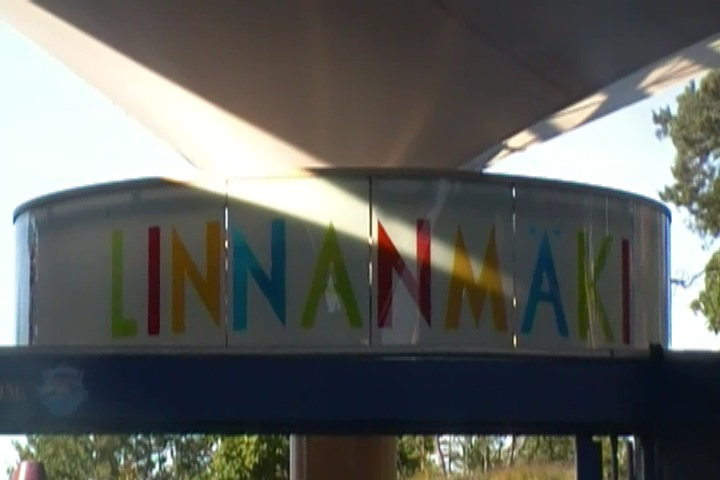
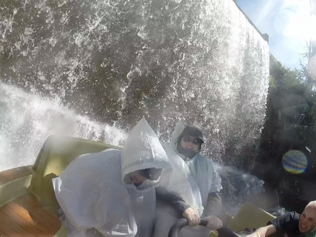
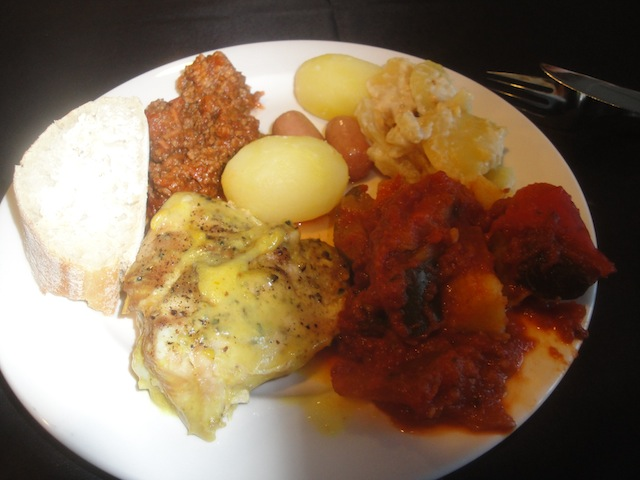

| |
Linnanmäki Review

Linnanmäki is an amusement park located right in the heart of Helsinki. It isn't a city park as it isn't owned by the city of Helsinki, but rather, by the Children's Day Foundation. However, it does give off a similar vibe as the other city parks in Europe, such as Tivoli Gardens, Liseberg, Grona Lund. So one could mistake it as one. Now, Linnanmäki is not on the same level as those other three city parks it was compared to due to its similar vibe to. But to be fair, those are kind of some of the best parks ever. So it's pretty hard to compete with those parks. And if you always just judge a park by "It's not the best, therefor, it sucks!", then you're going to have a misreable time. Because Linnanmäki is actually a really cool park. It's really good. Sure, there's no one stand out roller coaster that really makes the park stand out (This may have changed since my last visit with the addition of Taiga). But honestly, the coaster collection at this park, despite not having a real stand out coaster, is actually pretty good. It actually does have a fair amount of decent coasters. It has plenty of coasters, and none of them are really bad. And on top of that, there are plenty of other really cool rides that the park has to offer. Throw in other fun attractions, and nice atmosphere, just plopped right in the middle of Helsinki, and you have yourself a really cool theme park. I know it doesn't quite as much attention as other parks due to the fact that it doesn't have a star roller coaster like other parks, but it's still really good.
Rollercoasters
There is a link to a review of all the Roller Coasters at Linnanmäki.
Please keep in mind that there is no review of Taiga because it didn't exist when I last visited.
Top Coasters
Kirnu Review

Ukko Review

Vuoristorata Review

Decent Coasters
Salama Review

Tulireki Review

Family Coasters
Linnunrata Review

Powered Coasters
Pikajuna Review

Past Coasters
Vonkaputous Review

Flat Rides
Here are the reviews of all the Flat Rides at Linnanmäki. Now this is extremely sad, but Linnanmäki removed their best flat ride at the end of 2016. Yep. They got rid of Kieppi. WHAT!? NO!!!! Seriously, that was one of the best flat rides ever. Now Kieppi was a Huss Booster, and sadly, these things are extremely rare. It's hard to really describe these rides. It's kind of like a really fast breakdance. But not only is it spinning like crazy, but it also just flips a TON!!! And it flips really fast. So you're just spinning, and flipping, and tumbling, and twirling, and everything is whizzing by you, and it feels like you're put inside a washing machine on steroids. It really makes me sad that there are so few of these rides built cause honestly, this just might be the best flat ride ever. I mean, there are only 3 of these in existance. One of them is traveling in the German Fair Circuit. Makes sense because apparently all the flat rides there are completely insane. One apprently is somewhere in China. And then there used to be the one at Linnanmäki. But they got rid of it. Now for a little bit of a silver lining. Linnanmäki has confirmed that they have in fact, sold off Kieppi. I have no idea where it has moved onto now. The only information I have gathered is that it is no longer in Finland. That's all I know. I really hope it's in some easy to track park, and somewhere relatively easy to get to. Because this flat ride is better than most coasters out there. It was the star attraction of Linnanmäki until they got rid of it. From doing research, it appears that Linnanmäki replaced Kieppi with something called a Technical Heavy Rotation. And apparently, this was the best thing they could've added to replace Kieppi. It's a very rare flat ride, primarily only found in traveling fairs and almost no parks have this. So it's unique. That's good. And people keep saying it's really crazy and insane. From what I can gather. It looks good. It looks really good. It's just that Kieppi was so good and set the bar so high, and I highly doubt it'll top it. But at least they're trying to replicate the insanity of it. OK. What more is there to say about the flat ride collection now with Kieppi, best flat ride ever, gone? What's the new best flat ride (Most likely its replacement. But aside from that!)? Well, it'd probably be their drop tower. Kingi. And yes. This is another one of those Mach Drop Towers. The one that Busch Gardens Williamsberg has so much trouble trying to keep open. How the hell are they struggling so much, when TWO Finnish parks can get these rides to work just fine!? The drop itself is really good. It's fairly strong. The view is great. You can see Helsinki, the Baltic Sea, and some even claim you can see Estonia from the top on a clear day. But I never saw it and I'm guessing it's like that rumor where people claim you can see Canada from Top Thrill Dragster (Spoiler Alert: You can't). The only problem with the ride are the seats. Seriously. They really have to do something about those seats. They also have a Space Shot. It's nothing really that special. But hey. It has a really good view of Helsinki. And there's many other flat rides. They have a top spin, an enterprise, a pirate ship, a falling star, some chairswings, a ferris wheel, and a kiddy drop tower.
 If you know where Kieppi moved to, please let me know. It really is one of the best flat rides ever.
If you know where Kieppi moved to, please let me know. It really is one of the best flat rides ever.
Dark Rides
Here are the reviews of all the Dark Rides at Linnanmäki. Let's start out with what is without a doubt, the best dark ride they have in the park. Taikasirkus. If you know anyone who is afraid of clowns, then this is a dark ride just for them. Because this ride is basically a trip to the circus. Seriously. The whole thing is themed to the circus. So you see elephants, weight lifters, and clowns. LOTS and LOTS of clowns. So I really hope you're afraid of them if you're doing this ride. It's far from the best dark ride, but hey. How many theme parks have a freaking circus themed dark ride? That's just cool. They also have a haunted house themed dark ride. I'm not sure how that is as I never did it, but it's fun. There's an egg counting dark ride. I know it's for kids. But we rode it. And had more fun on it than we should've. They also have a 3D show, which is basically just a custom Wile E. Coyote cartoon, only in 3D! I know it's not much, but honestly, I just love the Loony Tunes too much to complain about that. Though I will admit that it looks really weird in computer animation. It's much better the way it normally is.
 "When you ride our circus themed dark ride, YOU'LL FLOAT TOO!!! WA-HA! WA-HA! WA-HA!"
"When you ride our circus themed dark ride, YOU'LL FLOAT TOO!!! WA-HA! WA-HA! WA-HA!"
Water Rides
Linnanmäki has a decent water ride collection. OK. It's actually not that special as it's only one ride. All they have is a rapids ride. But honestly, it's a pretty good rapids ride. Yeah. It doesn't have any special effects, any drops, or cool funky elements, such as a whirlpool. But honestly, just as a rapids ride, it's really good. This ride has A LOT of rapids. And on top of that, they have some waterfall walls on this ride. Yep. This ride doesn't f*ck around. It WILL get you wet. You WILL get SOAKED on this ride. This seems to be a theme with Linnemaki as this was also the case with their water coaster, but that doesn't exist anymore, so it doesn't matter. But yeah. The rapids ride here is a lot of fun and you will get WET!!! Oh, and there's also a lot of great Salama shots from the ride. =)

WARNING: YOU WILL GET SOAKED ON THIS RIDE!
Dining
Here are the reviews of all the resteraunts at Linnanmäki. The main one we ate at was a sit down resteraunt called Ilona. We ate at this place for a big group dinner. And yeah. I really liked this place. I don't think they had a specific cuisine they were serving. Well, obviously, they were. I just couldn't recognize it. I know the food I got consisted of lemon chicken, spaghetti with meat sauce, bread, potatoes, and other stuff. It was an all around really good meal. I'm not sure if this is normal food that they serve at the park or if this is something they just did for us since we were a private group. Either way, it was good. There was another place we ate at for lunch. I'm not sure what it was, all I know is that it was a place that served meatballs. Nothing special or extrodinary. I mean, this is food you get from IKEA. Except Sweden is over that way. This is Finland we're in right now. And hey. Meatballs are always good. More places need to serve them. I know there are several other resteraunts. Nothing that seems extrordinary, but it seems like good food. And if you like Popcorn, Linnanmäki has a lot of it. In fact, it has its own Popcorn Factory, called the Popcorn Factory. I'm not sure if it's any good, but I'm sure it's at least as good as regular popcorn. Give it a try sometime.

Finn food is best food.
Theming and Other Attractions
Here are the reviews of all the other stuff at Linnanmäki. OK. As far as theming goes, there really isn't much. Yeah. There's a little bit scattered here and there. But ultimately, there's really not much theming. As Linnanmäki is ultimately an amusement park. Located right smack dab in the middle of Helsinki. So hey. At least the park has a really nice atmosphere. And it does. Much like all of the city parks, it has a really cool atmosphere. Plus, the little bits of theming around the park, whether it be clown theming, fire theming, space theming, it may seem RCTish and just plopped down, but I still enjoy it. OK. What about other stuff to do? Is there other cool stuff at Linnanmäki? Yes. Yes there is. First off, we have to just go over what is without a doubt, the coolest thing. Their fun house. Yeah. It's Europe. Fun Houses are really common here. But hey. You know what? The one at Linnanmäki is a lot of fun. It has all the cool stuff. Crooked rooms, steep moving stairs, and some really cool slides. Just look out for the sudden stop at the bottom of some of those slides. Aside from that, there are other typical amusement park things. They have some cool arcade games, I'm pretty sure there are some decent shows, and other cool stuff that the park has to offer. It's just a cool place to walk around and browse. And they do have a lot of cool random things in the park.
 Uh...no. There's no sudden stop at the bottom of this slide. ;)
Uh...no. There's no sudden stop at the bottom of this slide. ;)
In Conclusion
Linnanmäki is a really fun theme park. Yeah. It's not something that really stands out to a lot of other enthusiasts as there are no real stand out coasters in this park. Nothing here is going to really stand out and crack any Top 10 Lists. But you know what? They do have a big coaster collection, and while there's nothing here that's amazing, there is a lot here that is unique. You've got one of the few Scenic Railways, you've got a Zac Spin, those are fairly unique, and while I'm no fan of it, that Mack E-motion coaster is the only one of its kind in the world. And on top of all that, there are just other cool and unique flat rides. That circus dark ride is fairly unique, Mach Towers aren't very common (though there are two of them in Finland). And they used to have one of the rarest and coolest flat rides on the planet. They sadly got rid of that. =( But at least the flat ride they got to replace it is also fairly unique and looks fun. And that's just the overall attitude of Linnanmäki. Just a fun, cool, laid back amusement park with nothing too extreme or earth-shattering, but a lot of cool stuff that gives Linnanmäki its own unique charm, and will keep you occupied for the day. So yeah. Definetly stop on by and check this park out.
Enthusiast FAQs.
*Are there kiddy coaster restrictions? - Linnanmäki doesn't have any kiddy coasters.

Tips
*Get on all the coasters.
*Check out all the other cool stuff here.
*All my POVs were done during a special event. So I'm not sure if they normally allow cameras. But hey. I got Tulireki with no problems in normal operating hours.
*Have Fun!!!
Theme Park Category:
Amusement Park
Location
Helsinki, Uusimaa, Sweden
Last Day Visited
June 28, 2014
Video
My official Linnanmäki video.
Complete Update List
2014
TPR's Scandinavia Trip
Here's a link to the parks website.
Home
|